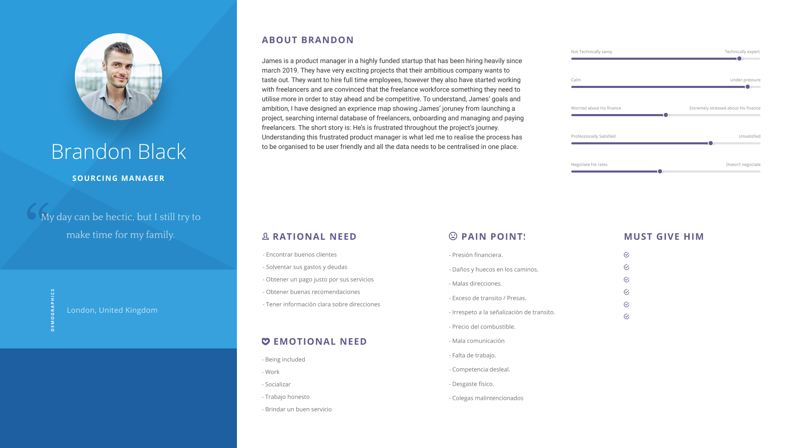
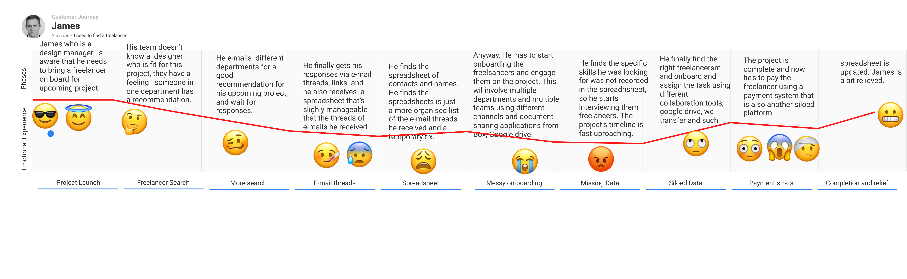
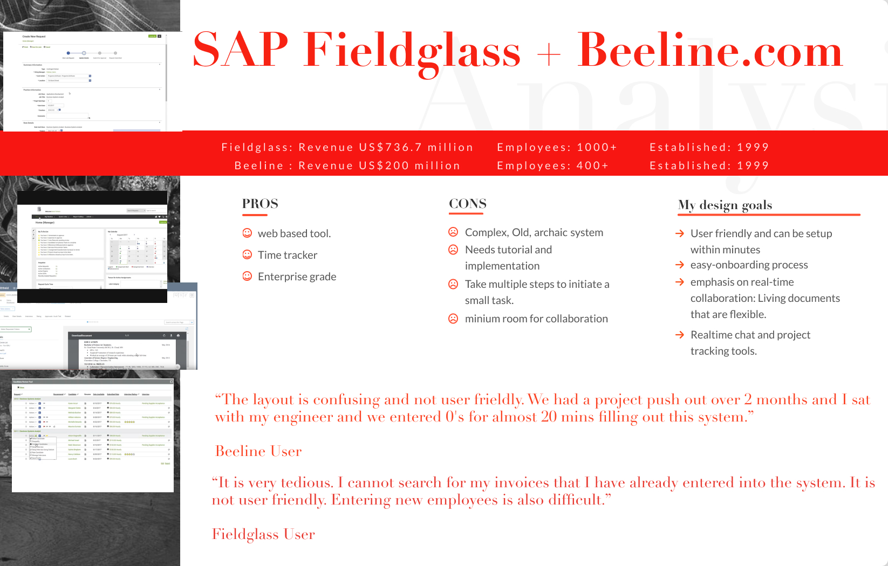
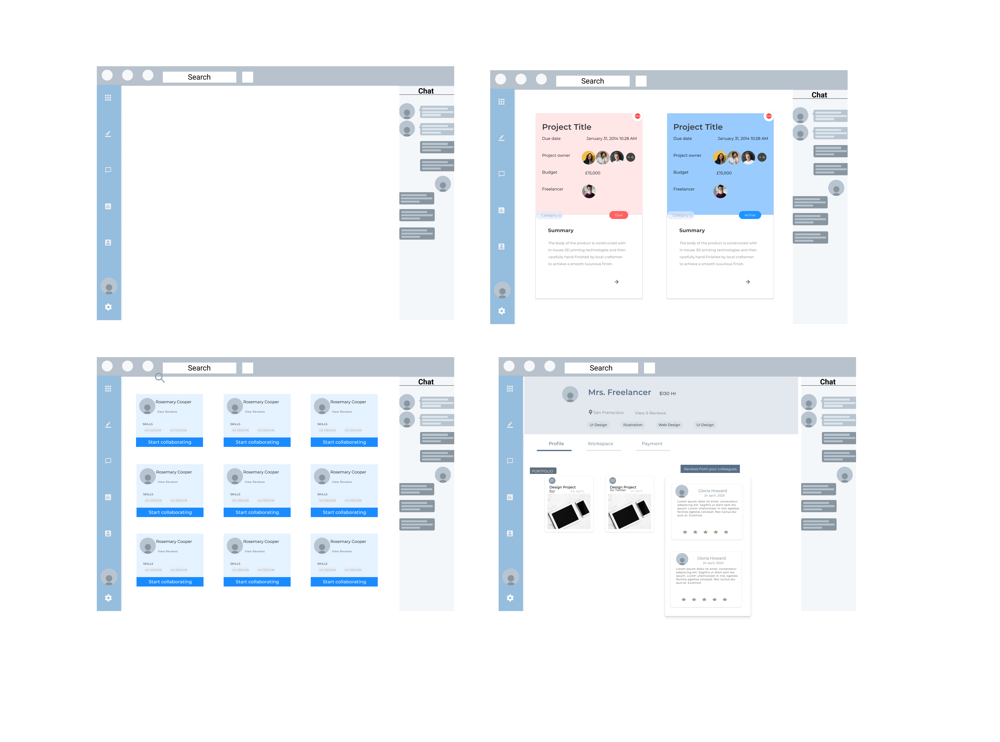
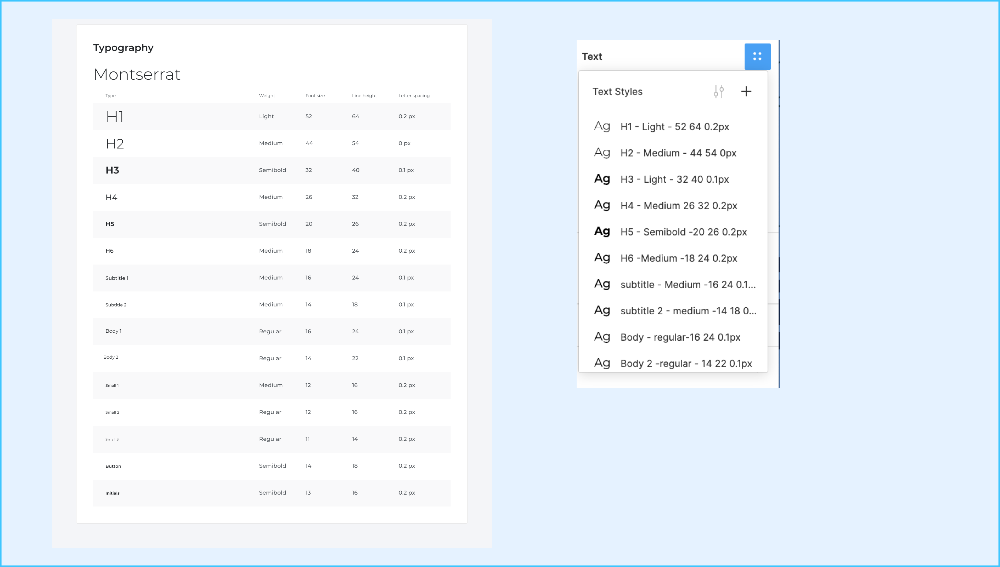
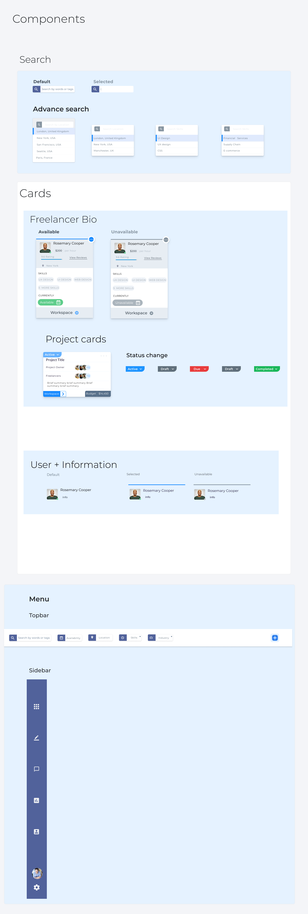

Designing a Vendor Management Software
The supply chain is one of the oldest, biggest markets in the world. At the same time, it’s less explored space by new technologies. This leaves it vulnerable to be inundated with outdated systems. The systems are not useful, and even bring painful experiences for its users. This was my initial experience when I tried to find a solution for managing freelancers I connect with remotely. As part of the design process, I initiated and launched a sprint: using primary data from interviews of industry experts, to be able to understand the problem in more detail.
Sprint: 3 Weeks
Skills:
Project Canvasing, Stakeholder Management, User Interviews, Empathy Mapping, User Flows, Participatory Design, Experience Mapping, Sketching, Rapid Prototyping, Usability Testing, Visual Design.
User research
I followed a user Centred approach. This user-centred approach led me to interview and interact with a range of professional within the contingency management industry. Their skill sets range from technical consultant, developers, and talent acquisition managers.
Lack of collaboration
Out of the the total 8 industry experts I interviewed to understand the overall problem and how they currently solve them, I shortlisted 4 industry experts that matched my criteria to dig deep with more information. These professionals share one problem . 85% of the interviewed individuals use a manual process to manage their freelancers. i.e spreadsheets and e-mails outside of the initial app that connected them. i.e Upwork, Dribbble, Behance etc. These places have their own simple collaboration tools, however, if you have different freelancers from a different number of platforms it becomes a nightmare, not only jumping from one platform to another but also remembering the freelancers they aggregated from these for future collaboration. In addition, if another colleague wants to hire a freelancer that was hired by another colleague, they would have to share spreadsheets, and e-mails and different tools in order to find an already on-boarded freelancer.
Not centralised
lack of collaboration, trust and system complexity were the repeated themes that came up in the user interview. The lack of collaboration due to the nature of remote work and the lack of immersive collaboration that mimic the fill the gap between real world collaboration and online one.
Miscommunication and lack of Trust
Trust: it’s really hard to build trust as freelancer online, and clients tend to work with with freelancers they have worked with before.
Not centralised
lack of collaboration, trust and system complexity were the repeated themes that came up in the user interview. The lack of collaboration due to the nature of remote work and the lack of immersive collaboration that mimic the fill the gap between real world collaboration and online one.
Personas
After interviewing 4 individuals who fall under the target audience, I was able to root out many features, pain points and user interactions on the app’s design.

User journey

Competitive Analysis
I evaluated the two biggest Vendor Management Beeline and Fieldglass SAP’S softwares in the industry, using *Nielsen Norman Group’s Usability Heuristics* (https://www.nngroup.com/articles/ten-usability-heuristics/)** **for** **User Interface Designs against following benchmarks:
Visibility of system status
User control and freedom
Consistency and standards
Recognition rather than recall
Flexibility and efficiency of use
Aesthetic and minimalist design
Error prevention
Design
Applied the following principles to my design:
1. Law of Common Region
2. Law of Proximity
3. Law of Uniform Connectedness
These principles were combined with the user research, competitive analysis, in which I used Nielsen Norman Group’s Usability Heuristics , combined with the above design principles *led a strong foundation for the start the wireframes, and push forward in my sprint.
Sketching and Wireframes
The hierarchy provides a great role in the information architecture of this dashboard. *Showing the most relevant tasks and content at the top of the page was crucial so that boat owners could see their service tasks and status at a glance.*
I choose to use an operational dashboard using cards for this redesign to show the users what status their project is in, as well as color coded for easy checking at a glance.
The dashboard has been structured so that the most important data is visible within the card using different font weight and size helping the user get a snapshot as soon as they open the dashboard.
Design system for scaling
Before focusing on creating the UI, I needed to focus on the style and patterns for the new branding.
This design system is based on atomic design principles. The system consists of a grid, typography, colors, navigation, and information architecture. *The design system was proven to be a key element in streamlining the design and development process, providing a single source of truth and consistency throughout the life of the product.*
Typography
Color Palette

Components
Final Outcome
Advanced Search
Product Managers and Stakeholders can quickly find freelancers in their database by location, skills, availability, industry and tags, which saves teams tremendous time by immediately finding a needed freelancer in seconds.
The User can also track the progress of the tasks and projects in one place, as well as assigning the freelancer a new task. No more e-mails threads &PDF and Doc files.
Freelancer Profile View
Workspace
Project Dashboard
Collaborative Workspace Having to glue together different collaboration tools and file systems is a pain for most users and freelancers. This collaboration page is focused on getting details communicated between teams, so there are tools like highlighting, code sharing, embedding different files into the document, following the vision of Alan Kay and such of designing A living document. Most of All data can be stored in one place.
Freelancer Index
All freelancers are organised in one simple dashboard, replacing the spreadsheet. This is a huge pain point I have gathered from the research. The freelancer index helps the project managers and other stakeholders to instantly see who is available and who is not.